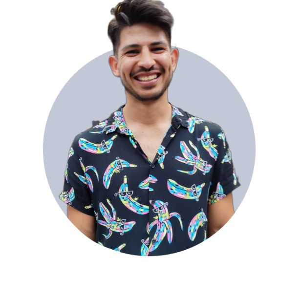

{% extends 'base.html' %}

{% block content %}
  <!-- Video Background -->
  <video autoplay loop muted class="absolute z-10 w-auto min-w-full min-h-full max-w-none bg-opacity-75">
    <source src="../static/video.mp4" type="video/mp4" />Your browser does not support the video tag.
  </video>

  <!-- Overlay Content -->

  <div  class="overlay-content z-60 flex flex-col items-center justify-center space-y-4">
    
    <h1 data-aos="zoom-in" data-aos-duration="2000" class="text-7xl font-light leading-snug text-center">Luis Bello</h1>
    <h2 data-aos="zoom-in" data-aos-duration="2000" class="text-4xl font-roboto text-center">Data Scientist</h2>
    <p class="border-b-2 border-gray-400 text-xl text-center">"I think that the passion for data is a path for learning to make decisions"</p>
    <a href="https://www.linkedin.com/in/luis-ernesto-p%C3%A9rez-bello-91a709210/" class="rounded-md bg-gray-800 px-6 py-1 text-base font-semibold text-white shadow-sm hover:bg-gray-500 focus:outline-none focus:ring-2 focus:ring-offset-2 focus:ring-gray-600 transition-colors duration-300 ease-in-out">@Luis Bello</a>
    <a  href="https://github.com/HidenLacan?tab=overview&from=2024-01-01&to=2024-01-03" class="text-white">
      <svg class="w-6 h-6 text-white" aria-hidden="true" xmlns="http://www.w3.org/2000/svg" fill="currentColor" viewBox="0 0 20 20">
        <path fill-rule="evenodd" d="M10 .333A9.911 9.911 0 0 0 6.866 19.65c.5.092.678-.215.678-.477 0-.237-.01-1.017-.014-1.845-2.757.6-3.338-1.169-3.338-1.169a2.627 2.627 0 0 0-1.1-1.451c-.9-.615.07-.6.07-.6a2.084 2.084 0 0 1 1.518 1.021 2.11 2.11 0 0 0 2.884.823c.044-.503.268-.973.63-1.325-2.2-.25-4.516-1.1-4.516-4.9A3.832 3.832 0 0 1 4.7 7.068a3.56 3.56 0 0 1 .095-2.623s.832-.266 2.726 1.016a9.409 9.409 0 0 1 4.962 0c1.89-1.282 2.717-1.016 2.717-1.016.366.83.402 1.768.1 2.623a3.827 3.827 0 0 1 1.02 2.659c0 3.807-2.319 4.644-4.525 4.889a2.366 2.366 0 0 1 .673 1.834c0 1.326-.012 2.394-.012 2.72 0 .263.18.572.681.475A9.911 9.911 0 0 0 10 .333Z" clip-rule="evenodd" />
      </svg>
    </a>
  </div>
{% endblock %}
